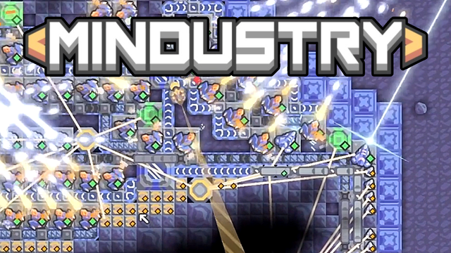
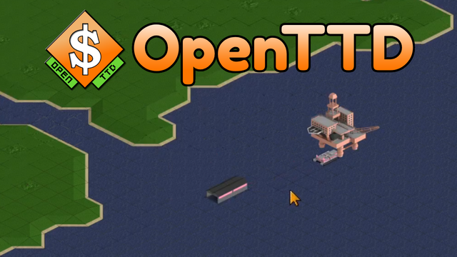
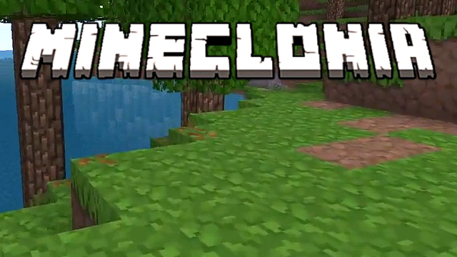

Mindustry
Esquemas de Mindustry mostrados en los vídeos.
Acceder
OpenTTD
(próximamente)
🔒 Próximamente
Mineclonia
(próximamente)
🔒 PróximamenteBienvenido a
Contenido sobre los juegos que me acompañan en el camino y que voy realizando de manera improvisada, sobre la marcha.
Ver el canal en YouTube
Esquemas de Mindustry mostrados en los vídeos.
Acceder
(próximamente)
🔒 Próximamente
(próximamente)
🔒 Próximamente